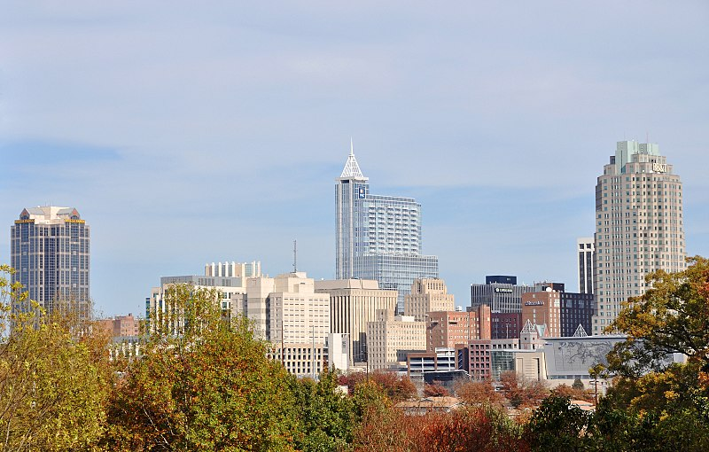

Discover the capital city of North Carolina.
Raleigh, a vibrant city nestled in the heart of North Carolina, is a captivating blend of rich history and modern dynamism. Known as the "City of Oaks" for its majestic oak trees that line the streets, Raleigh boasts a diverse and thriving community. As the capital of the state, Raleigh is a hub of cultural, educational, and economic activity. The city is home to numerous universities, including North Carolina State University, contributing to its reputation as a center of innovation and intellectual growth. Raleigh's downtown area buzzes with energy, offering an eclectic mix of art galleries, museums, restaurants, and entertainment venues that cater to a wide range of tastes. With its strong sense of community, commitment to sustainability, and an abundance of outdoor spaces, Raleigh provides an inviting and vibrant environment for residents and visitors alike.
Raleigh also embraces its historical heritage. The city is home to numerous historic sites, such as the North Carolina State Capitol and the Historic Oakwood neighborhood, which showcase its rich past and architectural beauty. Raleigh's commitment to preserving its history is reflected in its numerous museums and cultural institutions, such as the North Carolina Museum of History and the North Carolina Museum of Natural Sciences. Beyond its urban charm, Raleigh is surrounded by natural beauty, with nearby parks, lakes, and greenways providing ample opportunities for outdoor recreation and relaxation. Whether exploring its historic landmarks, immersing oneself in its vibrant arts scene, or enjoying the natural splendor of the surrounding area, Raleigh offers a captivating experience that captivates both residents and visitors.
